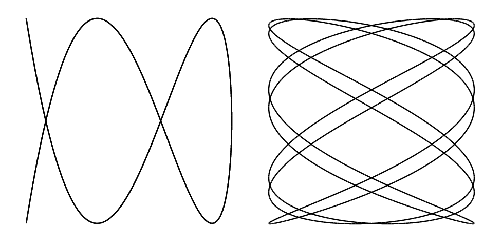

For coprime positive integers $a$ and $b$, let $C_{a,b}$ be the curve defined by: $$ \begin{align} x &= \cos \left(at\right) \\ y &= \cos \left(b\left(t-\frac{\pi}{10}\right)\right) \end{align} $$ where $t$ varies between $0$ and $2\pi$.
For example, the images below show $C_{2,5}$ (left) and $C_{7,4}$ (right):

Define $d(a,b) = \sum (x^2 + y^2)$, where the sum is over all points (x, y) at which $C_{a,b}$ crosses itself.
For example, in the case of $C_{2,5}$ illustrated above, the curve crosses itself at two points: $(0.31, 0)$ and $(-0.81, 0)$, rounding coordinates to two decimal places, yielding $d(2, 5)=0.75$. Some other examples are $d(2,3)=4.5$, $d(7,4)=39.5$, $d(7,5)=52$, and $d(10,7)=23.25$.
Let $s(m) = \sum d(a,b)$, where this sum is over all pairs of coprime integers $a,b$ with $2\le a\le m$ and $2\le b\le m$.
You are given that $s(10) = 1602.5$ and $s(100) = 24256505$.
Find $s(10^6)$. Give your answer in scientific notation rounded to $10$ significant digits; for example $s(100)$ would be given as 2.425650500e7.
solve(max_limit=10) → █solve(max_limit=1000000) → █Solution pending... the mathematician is still thinking.
Nothing here yet - come back when the dust has settled.